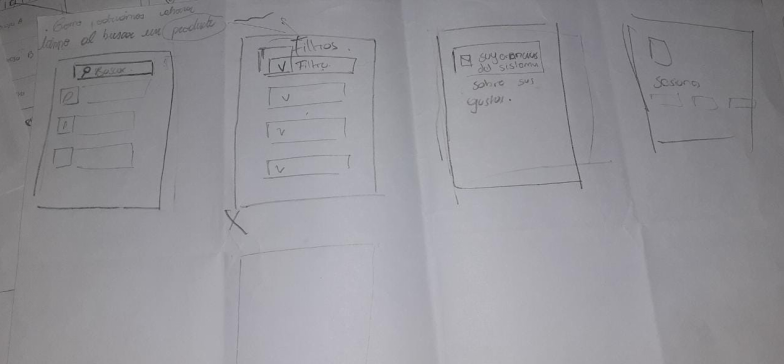

La aplicación para una vida
sin Gluten, Vegana o Lactosa
Nacimiento de Glutinny
Glutinny es una aplicación móvil diseñada para facilitar la búsqueda y localización de productos sin gluten o veganos. Nos enfrentamos a desafíos cotidianos relacionados con la escasa disponibilidad y la falta de información sobre estos productos en diferentes lugares. La aplicación surge como una solución integral para aquellos que buscan una alimentación sin gluten o vegana, brindando un espacio dedicado para encontrar fácilmente los productos que se adaptan a sus necesidades.
4W
| Quién | Qué | Dónde | Por qué |
|---|---|---|---|
|
La dificultad de encontrar alimentos en los supermercados sin categorías a menudo no es clara o llamativa | Ocurriendo en los mercados/almacenes de la zona y locales de comida. | Esta limitación, en muchos casos, no está guiada por la elección, sino por la necesidad de evitar complicaciones graves en la salud de quienes siguen estas dietas particulares. |
Problemáticas
- Ubicar mercados/restaurantes con productos veganos o sin gluten.
- Definir tipos de productos que poseen las tiendas.
- Categorizar estos productos para una búsqueda más fácil.
Historias de Usuario
Soy Paola, como persona celiaca quiero sectores específicos para personas con mi misma situación, para encontrarlos con mayor facilidad.
Soy Javier como persona vegana, quiero sectores específicos dentro de los locales de mi país, para conseguir con mayor facilidad, sin depender del país vecino.
Hola, soy Carlos, como persona celiaca y intolerante a la lactosa, quiero sectores específicos para localizar mis productos sin necesidad de esforzarme.
Comprendiendo al Usuario
De las cuales:
8 Celiacas
5 Veganas
5 Intolerantes a la lactosa
Encuesta
Se realizo una encuesta para comprender mejor el comportamiento de los posibles usuarios. De todas las personas encuestadas, el 70% tenia entre 18 y 20 años, el 26% tenían entre 21 y 30 años, y el resto mayor a 40 años. Estas edades parecían ser una muestra bastante representativa de la base de los posibles usuarios. La encuesta hizo preguntas a los encuestados sobre sus respectivas intolerancias alimentarias.
De los encuestados se les dificultad encontrar variedad de productos que se adapten a su intolerancia.
De los encuestados no encuentran los productos dentro de los almacenes.
Entrevista
A través de los resultados obtenidos, pudimos percatarnos de que la dificultad para encontrar alimentos que se adapten a sus restricciones alimentarias aumenta considerablemente al realizar algún viaje, ya sea a larga o corta distancia. En estos casos, los encuestados mencionaron que tienen problemas para encontrar supermercados que satisfagan sus necesidades. Además, observamos que cruzar la frontera, es decir, visitar ciudades extranjeras, parece estar asociado a una mayor conciencia, ya que los supermercados y lugares de abastecimiento alimentario en estas áreas están más aptos para satisfacer las necesidades alimentarias de aquellos con restricciones.
Journey Maps
Realizar el Journey Map nos dió una imagen clara de la interacción del usuario a medida que realiza alguna compra, obstáculos con los que se encuentra en el camino, entre otras cosas. La siguiente imagen representa una clara definición de la misma.
Storyboards
Se procedió a elegir aspectos clave para realizar pequeños bosquejos que servirían como un pantallazo general de cómo el usuario interactuaría con productos a través de imágenes.
Ideas de Diseños
Mediante una técnica denominada 'Crazy 8s', nos enfocamos en diseñar ideas en un período ínfimo de tiempo, durante el cual plasmamos los posibles diseños que tendrá la aplicación.

Arquitectura de la información
Realizar esta arquitectura ayudó considerablemente a estructurar y proporcionar un panorama de cómo el usuario interactuaría con la aplicación digital.
Prototipado
Sketches
Esta técnica de sketches permite visualizar el producto final en el futuro con el objetivo de generar situaciones en las cuales será utilizado, permitiéndonos visualizar y comunicar de manera efectiva las soluciones propuestas.
Prototipos a Papel
Se elaboraron prototipos en papel para que el usuario final pueda interactuar de alguna forma con la aplicación final. Estos prototipos permiten descubrir posibles fallas de manera temprana, facilitando así su corrección.
Podemos ver las pruebas en el prototipo de papel aquí.
Wireframes
Posteriormente se realizo el prototipo de mediana fidelidad y mejoras en ellos.
- Durante la evaluación, revisamos únicamente dos cambios que se encuentran en las recetas y en cada pantalla de un supermercado o restaurante. Estos cambios buscan simplificar la tarea del usuario al facilitar el regreso a la pantalla anterior.
Estudio de Usabilidad
Podemos ver a los usuarios probando el producto de baja fidelidad aquí.
Preguntas de investigación
- ¿Cuánto demora el usuario en encontrar el producto que necesita?
- ¿Pueden los usuarios encontrar lo que necesitan fuera de su localidad?
- ¿Qué podemos aprender de los pasos que tomaron los usuarios al buscar algún producto o local?
- ¿Existe alguna dificultad por parte del usuario en el proceso de búsqueda?
- ¿Los usuarios se sienten satisfechos con la app?
- ¿Cumple con las necesidades del usuario?
Resultados
- 14 segundos es lo que demora en promedio cada usuario en finalizar una tarea asignada.
- 5 de cada 7 veces que el usuario arranca una tarea, se dirige a la pestaña correcta.
- 3 de cada 7 usuarios volvía a dar clic en las pestañas de mapa o restaurante a pesar de ya haber entrado en ellos.
- 2 de cada 7 usuarios dentro de Mapa volvían a dar clic en los filtros de supermercados y restaurantes por no saber si se habían seleccionado.
- 6 de los 7 usuarios quisieron ver más detalles del producto
- 5 de los 7 usuarios evito las opciones de filtrar
- 1 de los 7 usuarios confundió los iconos al realizar las tareas
Prototipado de Alta Fidelidad
StickerSheets
Posteriormente se realizo el prototipo de mediana fidelidad y mejoras en ellos.
Evaluación del prototipo
Tarea
- Buscar en Encarnación si el local "Delicias de la abuela" tiene opciones veganas.
- Buscar en el supermercado "La Familia" un yogurt vegetal o sin lactosa.
- Buscar el restaurante "Curcuma" y ver que productos ofrece.
- Buscar una receta para veganos y ver el modo en que se prepara.
- Buscar una receta para celiacos y ver el modo en que se prepara.
Tiempo
- 3.4s
- 3.6s
- 3.0s
- 2.0s
- 2.0s
Es lo que demora en promedio cada usuario en finalizar una tarea asignada.
Conclusión de la Evaluación
Los usuarios necesitan saber más acerca de las características de los productos o los alimentos.
Los usuarios necesitan tener una muestra visual de que están en tal o cual pantalla. O que han seleccionado un filtro. (Restaurantes, Comercios en Maps).
Evaluación SUS
Se elegió una muestra representativa de usuarios, la cual despues de probar la aplicación se les pidió completar un cuestionario.
Los resultados por usuarios variaban entre el 65% al 86%.
Aplicación Funcional
Desarrollo de la Aplicación
Para el desarrollo de esta aplicación se procedió a utilizar el Framework React Native por su peculiar forma en el desarrollo de aplicaciones moviles además de ser eficiente y eficaz a la hora de desarrollar software.
Podrás encontrar el repositorio en GitHub.
Equipo de Trabajo

Estudiantes de Ingeniería Informática de la Universidad Nacional de Itapúa - Paraguay.
Año 2023.